年后肝"负重"？百年春护肝美颜能量抗衰老针——给肝"松绑"，让脸发光！
2026-03-01

About Us
关于百年春
眼底疾病和损伤,是指发生在眼底部位的病变,它不是一个具体的疾病,而是发生在眼底所有疾病的一个总称。一般在眼底主要存在的视网膜、视盘和黄斑等,眼底的病变和损伤包括视网膜病变、黄斑变性、视神经萎缩、眼底外伤等。
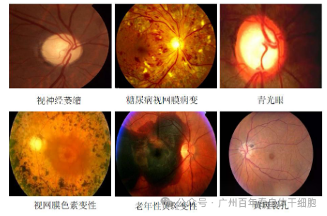
而损后缺乏足够的再生修复能力，是眼底疾病和损伤临床难治的生物学原因，为了突破这一个世界性难题，百年春在2006年成功研发出第三代自体干细胞生产技术已经能够逆向诱导生产自体视网膜干细胞，并且安全应用至今18年。
研发历程——修复眼底损伤的干细胞种类区别
在研发历程中，百年春科学团队反复测试目前在市面上所有修复眼底损伤中所采用的干细胞种类，
分别测试了：异体胚胎干细胞、异体胚脑神经干细胞、异体神经干细胞、异体间充质干细胞、自体ips干细胞、自体ips分化的自体神经干细胞，但因以上的干细胞种类都有对应的风险及弊端，
百年春则创立了世界首个，通过化学诱导（CiPSC技术）出自体视网膜干细胞，并且诱导得出的干细胞数量多，效果好，治疗方法完全无创，更加安全。
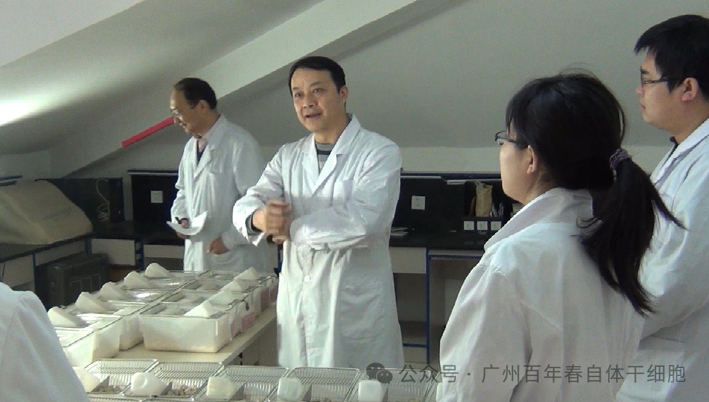
异体胚胎干细胞：
通过体外扩增从囊胚中分离的内细胞团细胞而建立的。然而，为了获得这类干细胞，必须破坏胚胎，这将导致伦理问题。此外，因为是同种异体来源，会引发患者的急性和慢性免疫排斥反应。
异体胚脑神经干细胞、异体神经干细胞：
来源于胚胎时期的脑组织，具有分化为神经元和胶质细胞的潜能，通过分化为神经元，修复受损的视神经通路，改善视力，但是同样是有伦理问题及排斥问题，并且难以精确控制其分化为特定的视网膜细胞类型。
异体间充质干细胞：
来源于骨髓、脂肪、脐带等多种组织，具有多向分化潜能，具有抗炎作用，虽然具有多向修复再生的目的，但分化为视网膜细胞的效率较低，并且还是会有不同程度的排斥。
自体ips干细胞、自体ips分化的自体神经干细胞：
iPSC 系是通过异位表达特定因子获得的。虽然患者iPSC可以避免排斥和伦理问题，但重编程中的基因操作会改变基因组，从而限制其临床应用，有一定风险不够安全。
化学诱导（CiPSC）自体视网膜干细胞、自体神经干细胞：
百年春通过血液细胞作为原料细胞，来源方便快捷，并且因其诱导技术可以避免病毒或质粒等外源DNA导致基因组崩解的风险，提供了安全的干细胞来源，并且证实化学诱导的自体视网膜干细胞与我们自然的视网膜干细胞具有完全一样的特性。
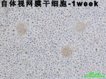
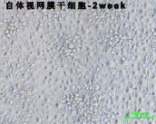
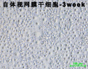
自体视网膜干细胞
显微镜图
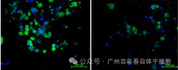
分化潜能
——自体视锥细胞
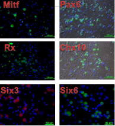
自体视网膜干细胞表型鉴定
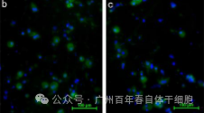
分化潜能
——自体视杆细胞
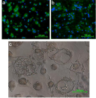
分化潜能
——自体色素上皮细胞
百年春案例分享
案例分享：
63岁男性客户，双眼白内障、颅内动脉肿瘤切除后双眼对视性视野缺损、双眼黄斑前膜、双眼屈光不正、双眼视网膜周边变性激光术后、双眼玻璃体浑浊，
在2021年，通过自体视网膜干细胞治疗2次，情况明显好转：
光感提升；
视野清晰，从近处物体模糊到看物清晰；
眼底充血、出血和渗出、浑浊物变少，修复了40%以上；
视野损害分级VFI，从之前的58缩小至51；
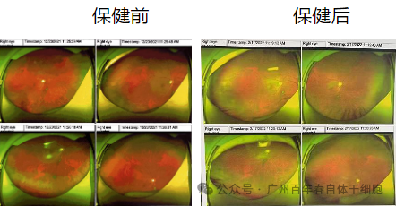
案例二：
58岁男性客户，长期胃胀气，消化不良，因慢性浅表性胃炎，突发视力下降，左眼0.2并且视野缺损，右眼0.5，眼底检查确诊黄斑变性，
经过自体视网膜干细胞保健2次，情况明显好转
第一次保健：
表示体力、耐力、精力均有所提升；
食欲好，新陈代谢加速；
视野缺损有减少，但视力无提高，眼底检查无明显改变；
第二次保健：
胃部不适全部消失；
左眼视力提升0.5，右眼提升0.8；
全面增减，面色红润；
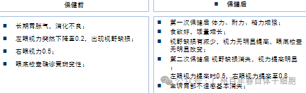
经多年的临床验证的经历，百年春独创的完全无创的自体视网膜干细胞移植的方式，安全且有效，摒弃了传统的眼睛视网膜下穿刺、眼球后穿刺、眼球晶体腔穿刺、干细胞标记的眼睛靶向精准导弹回输等等这些治疗方式，更加能够降低客户在干细胞治疗的心理压力，且相对保障了客户的舒适度。
想了解更多，关注我，可获取联系方式